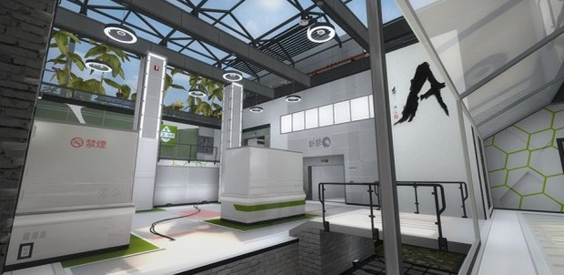

Shawn ‘FMPONE’ Snelling talks about map design in Counter-Strike and what it’s like to construct levels for the most punishing and rewarding of FPS games. Having worked on the recent Cache and Season remakes, and some more famous maps besides, Shawn is known for his immaculate art style and well-balanced, flavourful levels.
At every major tournament, professional players play the same maps in new and unexpected ways. The game of Counter-Strike is one of nuance and delicacy, and in part, this is because of its maps.
Counter-Strike’s level design is some of the most compelling in any game. To make a good Counter-Strike map is to create something close to perfection, because it has to be that good to please discerning players.
The levels Shawn has remade follow some tried-and-tested formulas for good level design, and promote combat in an unusually balanced and engaging way. Three lanes divide the teams up nicely, giving the attackers plenty of options but never spreading the defending team too thin. An open, centre area offers a great place to kill or be killed fast, while connectors, boost-spots and sneaky corners offer versatility for special round-to-round tactics.